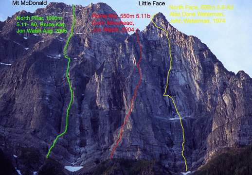

Selkirks
Mt. MacDonald's "little face" and the F.A. of "Prime Rib"

PRIME RIB ★★★ 5.11b 600 m, Colin Moorhead, Jon Walsh - June 26 2004 Mt. Mcdonald's Little Face, Rogers Pass B.C.
Mt MacDonald - North Pillar

At 7 a.m. on the 19th of August 2005, Bruce Kay (Squamish B.C) and I were racking up at the toe of the steep pillar on the right side of Mt. MacDonald's 1000 meter high North Face, for our first adventure together. We were surprised to see a bolt at the first belay, although we knew the pillar had been attempted a couple of times before. On the second pitch (5.7), two unnecessary and appalling protection bolts appeared, both within a couple of feet of bomber green camelot placements. Unfortunately, the nut on the first one was tight, but Bruce managed to get the second one loose, remove the hanger, and unleash the fury of his hammer on the protruding stud. It was the first time he had chopped a bolt in 30(?) years of climbing. The pillar steepened and Bruce led a nice pitch of 5.10-. One final bolt appeared at the belay above the third pitch which we left in place. The fourth pitch and the technical crux of the route moved right on to the arete. I managed to weld two knifeblades for protection from crimps before pumping out and having to hang. Tighter shoes would have been helpful for this short section of 5.11 face climbing. At the top of the sixth pitch, we passed the last signs of other attempts. Pitch after pitch of sustained 5.10 climbing followed with one more section of 5.11 on the eighth pitch. Finally, after eleven pitches, eight of which were sustained 5.10 and 5.11, we topped out on the pillar. Ahead, the angle eased a little as the wall split into a series of gullies and buttresses.
Sunrise from Perfect Peak
 Getting up early is worth it. Doug Sproul savors a sunrise from Perfect Peak, in the Selkirk Mountains. The day began at a Sorcerer Lodge, and we would go on to ski tour over 3000m that day, of perfect powder above a sea of clouds.
Getting up early is worth it. Doug Sproul savors a sunrise from Perfect Peak, in the Selkirk Mountains. The day began at a Sorcerer Lodge, and we would go on to ski tour over 3000m that day, of perfect powder above a sea of clouds.